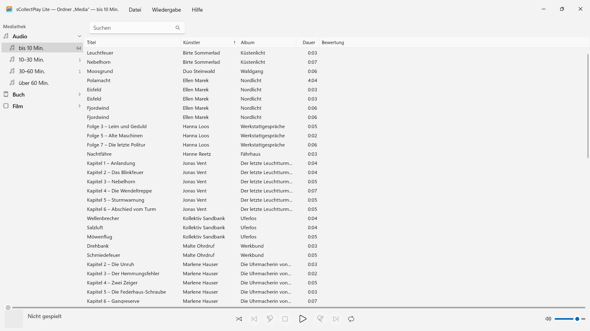
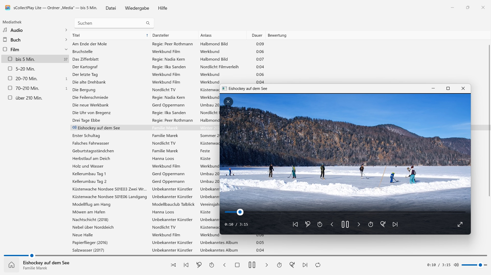

sCollectPlay Lite
Kostenlos: Ordner wählen und abspielen – ohne Import, ohne Umkopieren
Kostenlos · Ab November 2026 im Microsoft StoreKostenlos: Ordner wählen und abspielen – Musik, Hörbücher, Podcasts, Filme und E-Books stehen von selbst geordnet da. Ohne Import, ohne Konto, ohne Cloud. Auch iTunes-Mediatheken (XML).


sCollectPlay Lite spielt deine Sammlung dort ab, wo sie liegt: in beliebigen Ordnern, auf externen Platten oder auf einem Netzlaufwerk. Ordner wählen, und Musik, Hörbücher, Podcasts, Filme und E-Books stehen geordnet in einer Liste – ohne Import, ohne Umkopieren, ohne dass sich an deinen Dateien etwas ändert.
24 Sprachen: Deutsch, Englisch, Tschechisch, Kroatisch, Niederländisch, Finnisch, Französisch, Ungarisch, Italienisch, Japanisch, Koreanisch, Norwegisch (Bokmål), Persisch, Polnisch, Portugiesisch, Rumänisch, Russisch, Spanisch, Schwedisch, Thai, Türkisch, Ukrainisch, Chinesisch (vereinfacht und traditionell). Die App folgt der Anzeigesprache von Windows.
Diese Ausgabe spielt je Sitzung eine Quelle: einen Ordner oder eine XML. Wer eine andere öffnet, ersetzt die bisherige.
ZWEI QUELLEN
- Ordner: sCollectPlay Lite durchsucht einen Ordner samt Unterordnern und liest Titel, Künstler, Album, Genre und Spieldauer aus den Dateien selbst. „Gescannte Ordner aktualisieren“ (Strg+R) liest danach nur ein, was neu, geändert oder entfernt ist.
- iTunes-XML: die Mediathek von iTunes für Windows mit Playlists, Bewertungen und Wiedergabezählern. Ob ein Titel Musik, Hörbuch, Podcast, Spielfilm, Serie oder Musikvideo ist, übernimmt die App aus der XML.
ORDNUNG OHNE AUFWAND
Ein Ordner sagt nicht, ob eine Datei ein Song oder ein Hörbuch ist. sCollectPlay Lite teilt beim Scannen deshalb nach der Länge ein: Audio bis 10, 10–30, 30–60 und über 60 Minuten, Video von kurzen Clips bis zu Filmen über dreieinhalb Stunden. So stehen Songs, Hörspielfolgen und Hörbücher getrennt, ohne dass du etwas einstellen musst. E-Books und PDFs erkennt die App an der Endung.
FINDEN
- Suche über Titel, Künstler, Album, Genre und weitere Felder – auch in Playlists
WIEDERGABE
- Audio mit Warteschlange, Zufallswiedergabe und Wiederholen
- Videos im eigenen Fenster, mit Zeitlupe, Einzelbildschritt, Tonspur- und Untertitelwahl und Vollbild
- Windows spielt die meisten Formate selbst – MP3, AAC, FLAC, OGG, Opus, WMA ebenso wie MP4, MKV, AVI, WMV und MPG. Was es nicht kennt, etwa AIFF, DSD oder FLV, gibt die App an das Programm weiter, das in Windows für diesen Dateityp eingestellt ist – zum Beispiel VLC
MEHR IN DER VOLLVERSION
sCollectPlay führt mehrere Ordner zu einer Sammlung zusammen, merkt sich die letzte Quelle über den Neustart hinaus und bietet einen Spaltenbrowser nach Genre, Künstler und Album, frei wählbare Spalten, eigene und intelligente Playlists sowie den Export von Playlists als Ordner mit M3U8-Liste für VLC und Geräte.
DEINE DATEIEN BLEIBEN, WIE SIE SIND
sCollectPlay Lite schreibt keine Tags und ändert keine Metadaten. Gelöscht wird nur auf deinen ausdrücklichen Befehl: Eine Mediendatei aus gescannten Ordnern oder einer iTunes-XML kommt dann in den Windows-Papierkorb (auf Laufwerken ohne Papierkorb, etwa im Netz, wird sie nach Rückfrage endgültig gelöscht). Dateien einer sCollect-Mediathek löscht die App nie.
AUF DEINEM PC, UND NUR DORT
Keine Konten, keine Cloud, keine Analyse, keine Werbung. Die App greift nur auf die Ordner zu, die du ihr gibst. Jede Sprache mit vollständiger Hilfe.
- Erfordert Windows 11 oder neuer
- 24 Sprachen
- Support: SwiftAppsBavaria@gmx.net
- Datenschutzerklärung für sCollectPlay und sCollectPlay Lite